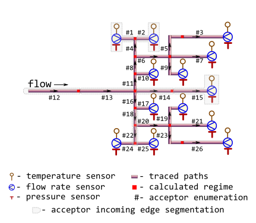

Data describes a virtual test bench of branched district heating network by exposing parameters associated with Minenergo Order 325. They treat data as a snapshot of network state and use it primarily for static thermal-hydraulic computations and topology effects.
Format
A data frame with 26 rows (number of nodes and incoming edges) and 17 variables:
- sender
An identifier of node which heat carrier flows out. Type: any type that can be painlessly coerced to character by
as.character.- acceptor
An identifier of node which heat carrier flows in. According to topology of test bench considered this identifier should be unique for every row. Type: any type that can be painlessly coerced to character by
as.character.- temperature
Snapshot of thermal-hydraulic regime state: temperature of heat carrier (water) sensor-measured on terminal acceptor node, [°C]. Type:
assert_double.NAs are introduced for nodes without temperature sensor.- pressure
Snapshot of thermal-hydraulic regime state: sensor-measured absolute pressure of heat carrier (water) inside the pipe (i.e. acceptor's incoming edge), [MPa]. Type:
assert_double.NAs are introduced for nodes without pressure sensor.- flow_rate
Snapshot of thermal-hydraulic regime state: sensor-measured amount of heat carrier (water) on terminal node that is transferred by pipe (i.e. acceptor's incoming edge) during a period, [ton/h]. Type:
assert_double.NAs are introduced for nodes without flow rate sensor.- a
Heat carrier (water) volume loss factor of cylindrical pipe, [h⁻¹]. Type:
assert_double.- d
nominal (outside) diameter of pipe (i.e.diameter of acceptor's incoming edge), [mm]. Type:
assert_double.- wth
nominal wall thickness of pipe, [mm]. Type:
assert_double.- len
pipe length (i.e. length of acceptor's incoming edge), [m]. Type:
assert_double.- year
year when the pipe (i.e. acceptor's incoming edge) is put in operation after laying or total overhaul. Type:
assert_integerish.- insulation
identifier of insulation that covers the exterior of pipe (i.e. acceptor's incoming edge):
0no insulation
1foamed polyurethane or analogue
2polymer concrete
Type:
assert_integerish.- laying
type of pipe laying depicting the position of pipe in space. Only five types of pipe laying are considered:
air,channel,room,tunnel,underground.
Type:
assert_character.- beta
logical indicator: should they consider additional heat loss of fittings located on this pipe (i.e. acceptor's incoming edge)? Type:
assert_logical.- exp5k
logical indicator for regime of pipe (i.e. acceptor's incoming edge): if
TRUEpipe is operated more that5000hours per year. Type:assert_logical.- roughness
roughness of internal wall of pipe (i.e. acceptor's incoming edge), [m]. Type:
assert_double.- inlet
elevation of pipe inlet, [m]. Type:
assert_double.- outlet
elevation of pipe outlet, [m]. Type:
assert_double.
Details
The test bench has the next configuration:

As it may be seen from the figure there is a particularity in topology of
the provided directed graph: each node has only single ancestor. Hence one
of isomorphic representation of such directed graph is a
data.frame in which each row describes a node along with its
incoming edge and each column contains an attribute value for that node or
an attribute value for its incoming edge.
Since they deal with incoming edges and hence nodes are all flow acceptors the natural enumeration of nodes is by acceptor id.
Note that to leverage igraph functionality for plotting there is a zero sender of flow.
See also
Other Minenergo:
m278hlair(),
m278hlcha(),
m278hlund(),
m278insdata,
m278inshcm(),
m278soildata,
m325beta(),
m325nhl(),
m325nhldata,
m325nvl()
Examples
library(pipenostics)
# Do not hesitate to use `data.table` and `igraph` for larger chunks of
# network.
# Check for declared topology isomorphism:
stopifnot(
all(!duplicated(m325nxdata$acceptor))
)
# Do all terminal nodes have sensor-measured regime parameters?:
terminal_nodes <- subset(m325nxdata, !(acceptor %in% sender))
stopifnot(
all(
!is.na(
subset(terminal_nodes, select = c(temperature, pressure, flow_rate))
)
)
)